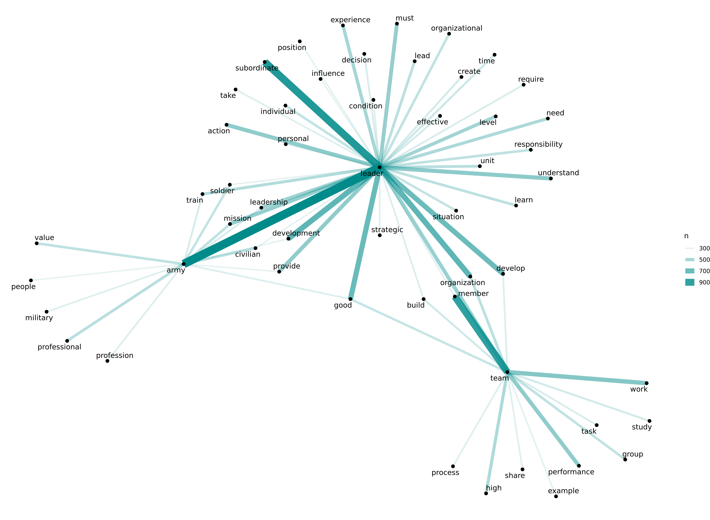
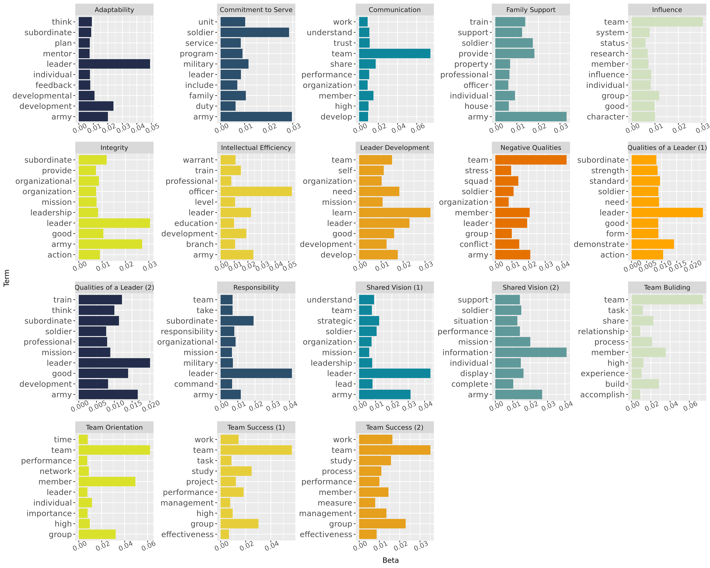
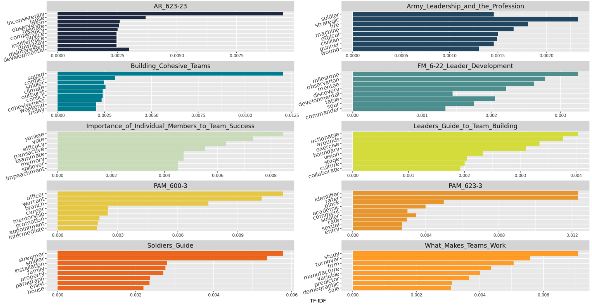

##Overview
We identified re-occurring language and underlying themes across both our qualitative and Natural Language Processing analyses that speak to what individual qualities (e.g., rank, skill, leadership) are most important to successful team performance in the Army.
###Codes
###Co-Occurance

###LDA

###TF-IDF ####Term Frequency Inverse Document Frequency 